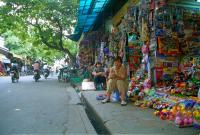
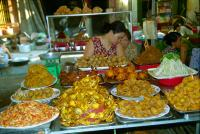
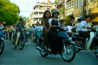
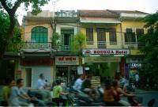
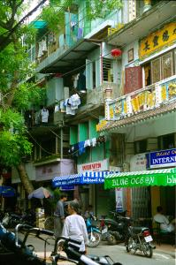
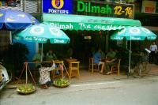

|
Vendredi 15 juin
Hier, on a passé la soirée avec Matthieu et Ludivine autour d’une Lao Beer!
C’est rigolo, ils sont partis en novembre et font le tour inverse de nous. Soit
Amérique Centrale (dont Costa Rica et Mexique) puis Népal et Asie du Sud Est.
Ils nous ont donné de bonnes adresses au Costa Rica et au Cambodge…
Lever difficile à cinq heures, bus à la fraîche (ça fait un bien fou) et arrivée
avant 9h00 à Vientiane. On en profite pour achever la visite de la ville par
son plus ancien temple, le cloître est super beau. Bière Lao au lit le soir!
Ca nous change de la soupe à la tomate au lit du Népal.
Samedi 16 juin
Encore un lever matinal! 6h00. Puis on poireaute à l’aéroport jusqu’à 10h00…
Et c’est parti. Adieu Laos, "Good Morning Viet Nam" (c’est que je connais mes
classiques!). L’avion survole des nuages, oui, mais aussi de très chouettes
paysages montagneux couverts d’immenses forêts. Cela cède le pas peu à peu à
de vastes étendues cultivées en approchant de Hanoï. Dès l’aéroport, on sent
le changement ! Au Laos, c’était “moora moora” comme diraient les malgaches
(doucement, pas trop vite…). Ici, c’est tout de suite “quick! quick!”. On a
à peine le temps d’acheter le ticket (2 USD) du minibus qui doit nous emmener
au centre ville qu’il faut déjà être assis dedans!
Moi qui trouvais que les asiatiques se ressemblent tous beaucoup, je suis surprise
de constater que les vietnamiens sont assez reconnaissables. Déjà les laotiens
ont des morphologies moins rondes et moins râblées que les thaïlandais à mon
avis, et ils sont plus grands souvent et plus élancés. Ici, c’est encore différent!
Il paraît qu’entre eux, ils arrivent à faire la différence par la forme des
yeux! Mais ils doivent penser que tous les occidentaux se ressemblent!
Le Vietnam, ça va nous plaire, c’est sûr. Hanoï est une grande ville très très
agréable. De l’eau, des ruelles sous les allées d’arbres, des cafés accueillants
partout, des gens au chapeau conique portant les fameux paniers suspendus à
un morceau de bois sur l’épaule, beaucoup de mobs et de vélos, peu de voitures,
des maisons basses (maxi 2 étages la plupart du temps) et beaucoup beaucoup
d’animation!
On a déjeuné: légumes sautés (haricots, tomates, carottes, choux-fleurs…),
poulet sauté et rouleaux de printemps végétariens, le tout accompagné d’un jus
de pastèque! Excellent!
Ce qui est incroyable ici, ce sont les cycles! Il y en a partout, sur la route
mais aussi sur les trottoirs, garés parallèlement les uns aux autres sur toute
la largeur du trottoir... Alors, entre ceux qui roulent (qui prennent toute
la route!) et ceux qui sont garés, il ne reste pas grand chose pour nous autres
simples piétons... En plus, on dirait que vélos ey cyclomoteurs ainsi que 2
ou 3 side-cars et une vingtaine de voitures roulent sans nous voir! C’est qu’ils
nous fonceraient dedans les drôles! Traverser une rue est périlleux car ils
occupent absolument TOUT l’espace. On se laisse facilement duper par les cycles.
Parfois, ils roulent tous dans le même sens dans une rue, on pense donc à juste
titre qu’elle est à sens unique et on ne surveille qu’un côté pour traverser.
C’est alors qu’arrivent plein de vélomoteurs dans l’autre sens! C’est simplement
qu’ils utilisent toute la largeur de la rue. On a tout le temps l’impression
qu’ils vont s’emmêler et... faire une mêlée, c’est peut-être pour cela qu’ils
klaxonnent tout le temps. En revanche, pas vu de transport public. Sinon, il
y a des vendeurs de rue partout qui veulent à tout prix nous faire acheter cartes
postales, livres, chapeaux coniques, hamacs, fruits, etc. Ils se baladent balancier
à paniers sur l’épaule à la rencontre de clients potentiels. Ce sont des marchands
ambulants quoi!
Dimanche 17 juin
On est millionnaire! Même multimillionnaire! Hier, on a retiré 2000000 de Dongs
au guichet automatique. Mais bon, vaut mieux parler en dongs, parce que sinon
ça fait environ 1000 FF. Largement de quoi se faire un petit déj en tout cas.
On se retrouve dans Hang Hanh, une petite ruelle sympa pleine d’arbres, de petits
restos et de bars. C’est un lieu de rendez-vous pour les touristes -surtout
le soir- et pour les vietnamiens -toute la journée- qui viennent ici pour discuter,
manger ou boire une bière. Dieu seul sait -et encore, je doute- que je ne suis
pas fan de colonisation, que je pense que ces gens se seraient très bien débrouillés
seuls, et que cela a davantage foutu la pagaille que cela n’a apporté de bonnes
choses. N’empêche que... il y a des cafés - en français dans le texte - partout
ici, avec des terrasses sur les trottoirs. Cela n’existe pas en Thaïlande, très
peu au Laos. Mais à Hanoï, il y en a partout, et ça contribue sans doute à rendre
la ville agréable et attachante (sauf ces bons sang de klaxons et de scooters
qui te roulent presques dessus!!!). Et puis, ce sont des lieux vraiment vivants.
Ce soir, par exemple, il y a un match de foot, tout le monde est là! Mais il
n’y a pas que les rues avec les cafés, tout le vieux quartier est agréable,
vivant. Les rues ont la particularité (comme souvent le cas en Inde) d’être
dédiées à une seule corporation. C’est chouette, tu te balade dans Luong Van
Can, la rue où l’on vend les jouets, dans Hang Can celle où on trouve papier,
carton et ficelles; ici pas de Casto, il faut aller dans Thouc Bac pour trouver
outils, vis et clous; et c’est Hang Giay qui va chausser tout le monde. Même
si cela se perd un petit peu, même si les produits à touristes envahissent un
peu toutes les rues, cela reste encore assez marqué et très sympa à visiter.
Il faut dire qu’il y a tant de choses à voir, partout des gens qui vendent quelque
chose, partout des gens étalés sur leur étal en train de faire la sieste. On
ne sait plus où poser les yeux.
Lundi 18 juin
A la fois on se sent revenir par rapport au Laos à il y a 10-15 ans et repartir
encore plus loin, toujours par rapport au Laos. En tous cas, par rapport a la
Thaïlande, on est loin derrière, c’est sûr. En avance pour la ville, le nombre
de mobs, l’habillement, les habitudes. En retard pour internet et les ordinateurs
qui sont tous de vieux trucs, et aussi les hôtels, c’est nettement moins soigné
et plus crade. Il faut dire qu’ici, on rentre chaussé alors qu’en Thaïlande
comme au Laos, on laissait les chaussures à la porte de l’hôtel.
Ce qui est chouette ici, c’est que la rue est pleine de monde. Thaïlandais
et laotiens passaient leurs journées scotchés à la télé (quand il y en avait
une pour les laotiens) et en particulier devant les DVD de karaoké! Ils en sont
fous! Au Vietnam, les gens sont plus dans la rue.
Il est 19h00, on vient de se poser devant une bouteille d’eau fraîche. Après
trois jours à parcourir hanoï à pied dans tous les sens, je crois pouvoir dire
que c’est une ville fatigante et qui rend sourd. On a les oreilles bouchées
à force d’être saturée de klaxons et en plus on n’arrête pas de dégouliner de
partout, même des bras, des chevilles, des oreilles! Fait chaud...
Suite du voyage : Réflexions en bus
|

Vietnam
Hanoi
|
Vietnam
Hanoi
|

Vietnam
Hanoi
|

Vietnam
Hanoi
|

Vietnam
Hanoi
|

Vietnam
Hanoi
|

Vietnam
Hanoi
|
|
|